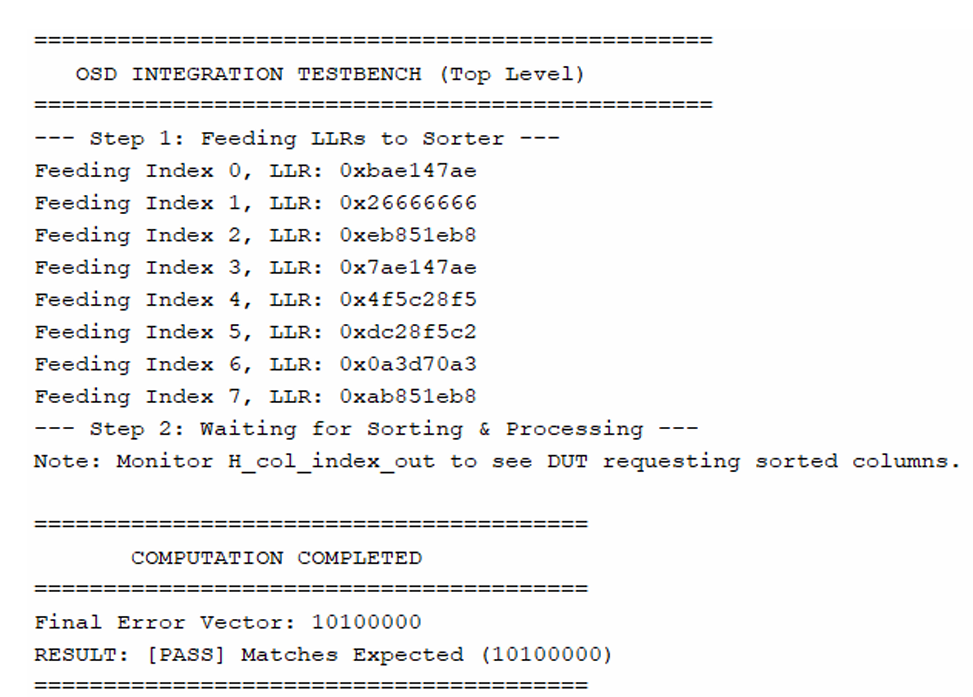

Project Overview: This project involved the RTL design and implementation of an Ordered Statistics Decoding (OSD) accelerator, a critical post-processing unit for Quantum Error Correction (QEC) The architecture was developed in SystemVerilog to solve the latency bottleneck of matrix-intensive decoding, enabling the real-time processing required for fault-tolerant quantum systems. Key functional units include a Systolic Priority Queue for reliability sorting, a 2D Systolic Array for dynamic Gaussian elimination over GF(2), and a pipelined LSE Solver.
The design focuses on achieving deterministic, sub-microsecond latency to meet the tight timing budgets of superconducting qubits.Verification was conducted through a comprehensive bit-accurate frontend flow, comparing RTL simulation results against a high-precision Python golden model